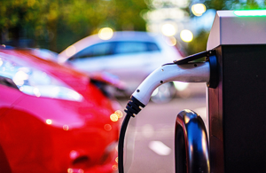

The UK leads the transition to net zero and is on target to install 300,000 public electric vehicle chargepoints by 2030.
key milestone passed as new stats show there are now more than 50,000 public electric vehicle chargepoints boost in charging infrastructure will help the country’s transition to electric vehicles moment comes as world-leading zero emission vehicle mandate set to come into effect next year